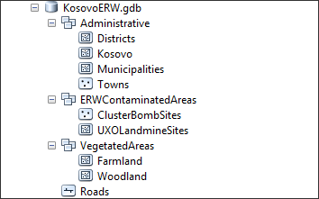
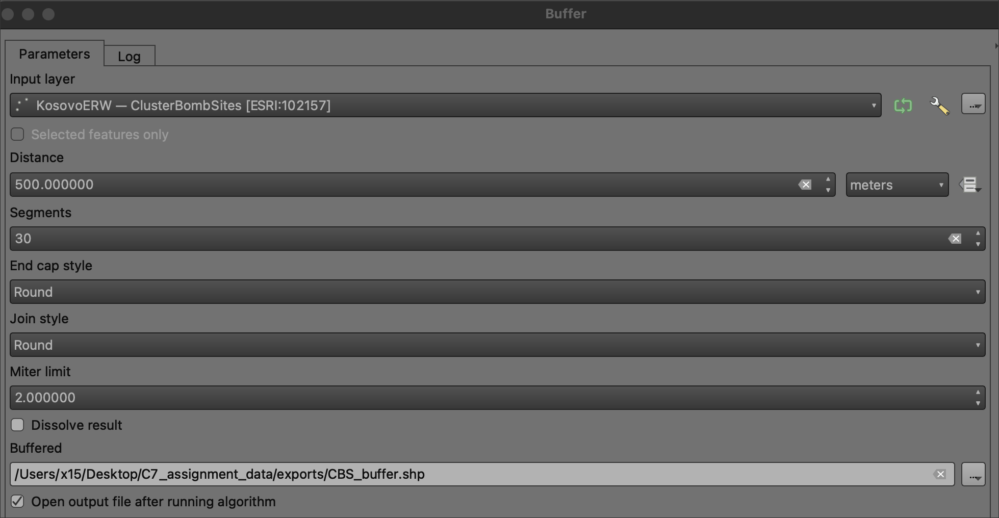

Class 8 Assignment: Spatial Analysis & Geoprocessing
Fall 2025 | NINT5380 - CRN2189

Preamble
Spatial analysis and more narrowly geoprocessing is a core component, capacity and function of GIS. Here the goal is to identify, manipulate, transform and operate both within and amongst spatial layers in order to solve spatial problems. Early in the assignment you will operate within single layers - known simply as single layer analysis. Here you will want to create proximity distances from a geographic feature that is deemed toxic, a danger to avoid via distance. Later in the assignment you will utilize overlay analysis between two layers of spatial data. Overlay analysis is operation(s) in GIS for superimposing multiple spatial layers representing different themes together for analyzing or identifying relationships between each of the layers. As discussed in the lecture, Boolean logic will be utilized throughout these analysis steps. In the overlay analysis steps, new spatial data sets will be created; in some instances, these new data sets will become the input for yet another step in the larger assignment methodology.
This week’s assignment will draw on the primary concepts covered in Class 8 lecture & lab sessions:
- Geoprocessing - Proximity and Overlay
- Calculating Geometry
- Assigning Field Values and ranks
- Joining Tabular data to Feature Data
- Thematic Map Design for Hazard Ranking
In this eighth assignment, you will be utilizing input data representing ERW toxicity - “explosive remnants of war” left over from the late 1990’s Kosovo War. As discussed in the lecture, this is a global problem despite international law outlawing both land mines and cluster bombs - primary sources of war contamination.
A synopsis of the technical steps of the assignment listed as follows:
- Download and access necessary data for both administrative and ERW themes for Kosovo. These features will all be vector features in the same coordinate system for Kosovo - a local projected system known
ETRS 1989 Kosovo Gridwith units inmeters. - Create Proximity Buffers for both Land Mines and Cluster Bombs - both with different zone distances.
- Union and Dissolve these distances into one final layer of contamination.
- Clip the newly created contamination zone to meaningful administration boundaries known as districts; once complete each district now has a portion of contamination that ‘starts and stops’ at the polygon edge of each district.
- Once clipped, each district will have a certain area calculation of contamination; and some districts will have no contamination reported back as
NULL. - With area and % of districts calculations complete in a districts table, this tabular structure will be ranked and then joined back to the original feature geometry for districts.
- With a completed feature for districts, an ordinal value will then be mapped to give priority to districts within Kosovo for cleanup intervention.
As discussed in the lecture, the following flowchart denotes significant stages of the assignment methodology:
Class 8 Recorded Lecture (Titled Class 7 Lecture):
Before proceeding with assignment steps below, review the posted lecture slides + lecture recording for an overview of this week’s concepts and themes.
Class 8 Readings:
This week’s reading that will be featured on the upcoming quiz will be from Essentials of Geographic Information Systems textbook. There is supplemental reading for your reference (Not featured on the quiz).
The Class 8 quiz on Sunday 11/02/25 will feature 10 questions covering content in the textbook Chapter 8 (read the complete chapter) as noted below:
Essentials of Geographic Information Systems textbook - Chapter 8, pages 163 - 174 (Spatial Analysis of Vector Data)
Supplemental reading (not featured on Quiz):
- International Committee of the Red Cross - Explosive Remnants of War
- For further discussion and terminology related to Toxic Remnants of War, see website.
Data:
Location of Class 8 KosovaERW.gdb for download
To begin the assignment, download and access the following .gdb. Create a new assignment .qgs and connect via Directory to the .gdb:

.gdb structureNote the local, projected coordinate system (ETRS_1989_Kosovo_Grid) and its unit of measurement that will be used throughout the assignment. It is critical that all features used is a geoprocessing framework partake of the same coordinate system to avoid any processing errors.

Assignment Step 1
With the assignment data downloaded to your local drive, make a connection via Data Source Manager to the .gdb:
.gdb connection via Data Source ManagerOnce the connection is made to the .gdb, Add the layers necessary for the assignment:
.gdb structureThe following layers are needed: ClusterBombSites, Districts, Kosovo, Municipalities and UXMLandmineSites.
Data viewed within QGIS map view/canvas:
.qgs projectNote the projected CRS for both the project and the layers included therein:
Assignment Step 2
Geoprocess - Proximity Buffers:
Create BUFFERS
UXOLandmineSites Buffer = 100 meters
ClusterBombs Buffer = 500 meters
Save all resulting buffer features in an assignment folder you make titled exports outside the .gdb.
UXOLandmineSites Buffer parameters:

ClusterBombs Buffer parameters:

Check Result:
all buffers created in this assignment can abide by a segment count of 30. Increasing the segment count creates a more precise ‘smooth’ boundary polygon.
Assignment Step 3
Geoprocess - Union Buffers:
UXOLandmineSites Buffer + ClusterBombs Buffer
Save Union into exports folder
Union Tool:
Union parameters:
Union results in 2278 features; check attribute table to see new union feature count and attributes:
Video Guide I | Step I-III:
Assignment Step 4
Geoprocess - Dissolve
With Union complete, the next step is to Dissolve this Union into just one final polygon. In effect, this will create a boolean spatial relationship whereby ‘inside’ the polygon equates to contaminated land; and conversely, ‘outside’ the dissolved polygon equates to no contaminated land.
In QGIS there are several buffer tools available. In this assignment, we will first create a dissolve field in the attribute table, set each record to integer 1, and disslove based on this interger value 1:
Create a new field dissolve_c (dissolve calculation); type integer, accept default length 10 within the Union layer. Populate the new field with simple value 1:
dissolve_c new fieldNext, search within the Processing Toolbox for dissolve:
Utilizing GDAL > Dissolve from the Processing Toolbox:
Dissolve Parameters:
Dissolve Result:
The Dissolve should result in one polygon feature, validate this result via the attribute table before proceeding:
Assignment Step 5
Geoprocess - Clip
At this juncture, the ERW area has been determined and dissolved into one feature, but there is no way to determine where ERW starts and stops within a particular district(s). To accomplish this task, Clip will be utilized. Access the tool via main menu like other topline geoprocessing tools:
Populate the parameters for Clip process as follows:
While running the tool, you will likely produce an Invalid Geometry error. To proceed, utilize Fix Geometries via the Processing Toolbox an input the districts layer as the problem geometry. Save the result as districts_fixed.shp and use this fixed geometry to rerun the clip.
Check the result of the successful clip. At this juncture, you should have 235 records:

the AREA column is from the district layer, transposed into the Clipped attribute table. In succeeding steps, we will use this total sq. area per district to calculate a final % contaminated per district.
Also notice how the erw_clip differs from the original dissolve input. Here the contaminated areas will appear ‘cracked’ along the edges of districts:
the AREA column is from the district layer, transposed into the Clipped attribute table. In succeeding steps, we will use this total sq. area per district to calculate a final % contaminated per district.
Assignment Step 6
Utilizing the Add Geometry Column function via Vector Tools, create a new column for area representing contamination within each of the 235 districts clip result:
Assignment Step 7
As a result of Step #6 above, both AREA for districts as well as area_2 for contaminated sq. area (meters) now exists in the attribute table for contaminated districts, the result of the Clip geoprocessing. The following steps will create a normalized column for % of each district that is contaminated. This is needed to know the relative levels of contamination across all districts in Kosovo.
Use the following expression for % contaminated:
("area_2" / "AREA") *100
To start, use Add field to create a new column that will house % contaminated. Name the field/column PCT_CNTM and populate with the above expression:
pct_contam.png
Video Guide II | Step IV - VII:
Assignment Step 8
Determine categorical classification ‘level of contamination’:
While normalized % contamination now exists in the table, an ordinal category of ‘level of contamination’ is a more effective approach for priority mapping. In this step both thresholds and a range will be used to develop levels based on the following criteria:
| Level Description | Definition |
|---|---|
| None | 0 percent, i.e. NULL |
| Low | <1.3 percent (up to the median value of contamination) |
| Medium | 1.3-6.5 (between one and five times the median value of contamination) |
| High | >6.5 percent (more than five times the median value of contamination) |
To start, create a column entitled LVL_CONTM via Add field, text type with an length of 10 (default). This will be the column for Level Descriptions. Add in placeholder value as ‘test’:
Next, utilize the ‘two-step’ selection>assignment process whereby you make a threshold criteria selection via Select by Attributes and then populate (assign) a new value into another column for those records that have been selected.
In the selection>assignment process, make sure to fully clear each selection immediately following the new value assignment. You need clear selections at each step to avoid selecting atop currently selected features.
The first condition will be for those districts that have LOW contamination. This is different than NONE which you address at the end of the assignment.
Select by Attributes the first condition for the LOW value. This should result in 42 districts selected:
"PCT_CNTM"<1.3
Next assign the text ordinal value “LOW” to the LVL_CONTM column. Once complete, clear all active selections.
Clear the selection and move to the next selection>assignment for MEDIUM contaminated districts.
Select by Attributes the second condition for the MEDIUM value:
"PCT_CNTM" >=1.3 AND "PCT_CNTM" <=6.5
Once selected, apply “MEDIUM” to the LVL_CONTM column; 108 districts should be selected.
Clear the selection and move to the next selection>assignment for HIGH contaminated districts.
Select by Attributes the third condition for the HIGH value:
"PCT_CNTM">6.5
When the selection>assignment process is complete, Toggle OFF editing the layer and save all edits.
Assignment Step 9
After finishing Step #8, export the feature attribute table to exports folder as contamination.csv. In this step, you forfeit the geometry and just keep the attributes. You have created your ordinal ranking values based on % contaminated per district; you do not need to perpetuate the actual geometry for this mapping - just the attributes. The contamination.csv should contain 235 districts with all the original attributes plus the additional attributes you have created in the preceding steps:
.csv; by default this table will be placed back into the project TOCAssignment Step 10
Next, create a table join between the contamination.csv and the original districts.shp:
Utilize the Joins function to do this step, located within the districts layer properties. Populate the join column as the OBJECTID which is an unique identifier common between both the contamination.csv and the original districts.shp:
With the table join complete, export the joined feature to the exports folder as districts_contaminated_lvl.shp:
Assignment Step 11
Open the districts newly joined feature attribute table and note 92 remaining NULL records; these are the records that contain NO ERW. Sort the LVL_CONTM column so that the NULL values are at top of table; also preview the spatial pattern of NULL as you interactively select and sort by hand within the table NULL value records:
Currently LVL_CONTM column contains high, medium and low ordinal values; but a final step needed is to set the NULL values to the NONE value. With the current 92 selected records, utilize the Field Calculator to assign ‘NONE’ to these selected districts:
QGIS will rename fields upon feature export; note that the previous LVL_CONTM is now contamin12 in the example.
Assignment Step 12
Next, thematically map ‘Level of ERW Contamination’:
Utilize the contamin12 column as input into ordinal categories for thematic mapping. Design your classes so that those districts with high contamination appear dense relative to medium and low classes. Make sure to visually segment the districts that have no contamination (NONE) separate from the classes that do indeed have some level of contamination as its especially important to separate none from low.
contamin12contamin12- Refer to Map Layout & Deliverable below for other cartographic details.
Video Guide III | Step VII - XII:
Map layout & Deliverable:
To development the final map design, utilize the map example PDF below to help guide your process.
Final map layout will include the following elements on either a 11x17” or 8.5x11” Portrait 300 DPI:
- Main map frame featuring your cartographic output with thematic design
- A map title
- Legend representing each ordinal value for level of contamination
- Data source & Author tag

Utilize the following map examples to guide your design process:
Resources:
Mine Action Clearance, Kosovo - 2022